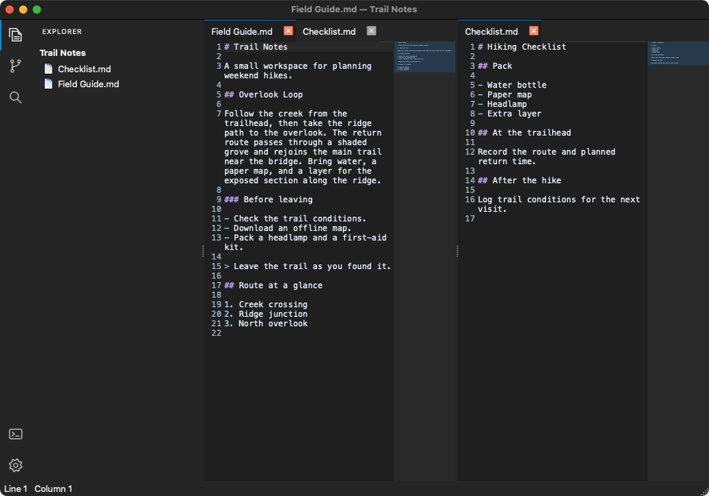

Shared Split Buffers
Split left or right, or move any tab to a new window. Splits share the live document and undo stack while keeping independent cursors and scroll positions.
Nebula Code is an offline-first editor for macOS and Linux powered by Scintilla, Lexilla, and QTermWidget—with split buffers, local clangd LSP, and Git built in.

Every panel is native Qt Widgets with CPU-painted Scintilla views.
Split left or right, or move any tab to a new window. Splits share the live document and undo stack while keeping independent cursors and scroll positions.
Jump anywhere with ⌘P Quick Open, Ctrl+G Go to Line, ⌘⇧F Find in Files, ⌘D multi-cursor, and Match Case / Whole Word find.
Real QTermWidget shell docked at any of the four window edges, remembered per workspace, with 5,000 lines of scrollback.
On-demand LSP 3.17 completion, diagnostics, go-to-definition, and references via local clangd, plus stage, unstage, diff, and commit with local git.
Bundled Lexilla highlighting and folding for C/C++, Python, JSON, Markdown, Bash/Zsh, CMake, YAML, Rust, HTML/XML, CSS, and Diff/Patch.
Customize built-in Light and Dark palettes, fonts, minimap, text wrap, and portable shortcuts in versioned local JSON files.
Seven fresh launches per editor and file size on GitHub-hosted x86-64 and ARM64 runners (revision 6028b09).
| Arch | File | Nebula | VS Code | Speedup |
|---|---|---|---|---|
| x86-64 | 75 KB | 145 ms | 2.71 s | 18.7× |
| x86-64 | 11.25 MB | 259 ms | 2.70 s | 10.4× |
| ARM64 | 75 KB | 96 ms | 2.34 s | 24.4× |
| ARM64 | 11.25 MB | 199 ms | 2.31 s | 11.6× |
Prebuilt packages for macOS and Ubuntu 26.04, or build from source in minutes.
Download *-macos-arm64.zip or *-macos-x86_64.zip from Releases and move NebulaCode.app to Applications.
Download the .deb package for your architecture and install with APT:
sudo apt install ./nebula-code_*_amd64.debRequires C++20, CMake 3.25+, Ninja, and Qt 6.5+ (Qt 6.12.1+ recommended on macOS):
cmake --preset release
cmake --build --preset release --parallel 4
ctest --preset release